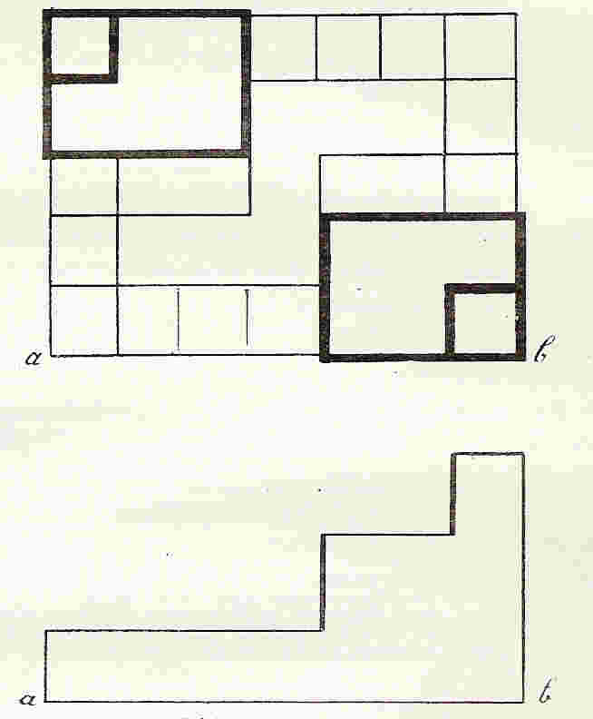
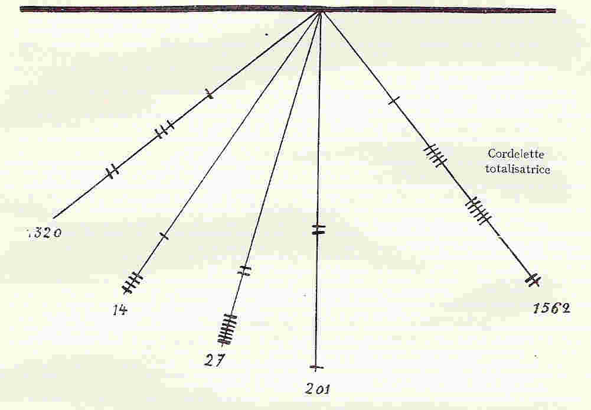

par Louis Baudin
Professeur à la faculté de Droit de Dijon
|
« L'essence de l'État est d'être le pouvoir de la raison exprimée par la loi, et non celui de l'homme perverti par la fantaisie. » |
|
|
(Dupont-White, L'individu et l'Etat. Introd.). |
C'est en raison de l'existence des communautés agraires qu'un grand nombre d'auteurs ont cru devoir appeler socialiste l'Empire des Inka. Sans doute la communauté est un groupement d'apparence collectiviste, puisqu'elle comporte une mise en commun des facteurs de production, mais elle se présente comme la résultante d'une longue évolution naturelle dont l'origine se perd dans la préhistoire. C'est une formation spontanée et non une création rationnelle, c'est un système subi et non un système voulu.
Au contraire, l'œuvre que nous allons examiner maintenant porte la marque propre du socialisme, car elle est un essai de rationalisation de la société. C'est l'homme qui en est l'auteur, c'est lui qui en a conçu le plan et qui l'a imposé et ce plan tend à réaliser une véritable absorption de l'individu par l'Etat, le bien-être du premier n'étant assuré que pour aboutir à la grandeur du second.
Si nous avons choisi ce titre de Socialisme d'Etat, c'est pour bien caractériser une organisation d'ensemble, conforme à un certain idéal et appliquée par voie d'autorité. La doctrine du socialisme d'Etat, il est vrai, n'a pas une grande rigueur théorique ; telle qu'elle est enseignée par Rodbertus, Lassalle ou Wagner, elle est flottante et se présente surtout comme une réaction contre l'école de Manchester; mais, en dépit de ses incertitudes, elle repose sur une « action régulatrice d'un pouvoir central dans les rapports sociaux » 1. Jamais cette action ne s'est fait sentir avec plus de force qu'au Pérou où la demande est strictement calculée grâce à une impitoyable fixation des besoins, l'offre déterminée par une réglementation minutieuse de la production, et l'adaptation de l'offre à la demande assurée parc un système de statistiques et de réserves.
En Europe, les socialistes d'État modernes entendent bien respecter l'ordre existant, c'est-à-dire la propriété privée et l'initiative individuelle; il en est de même au Pérou, où les Inka maintiennent les communautés agraires, qui représentent l'ordre existant de leur temps Ainsi, transposé en Amérique, le socialisme d'État prend une forme beaucoup plus accusée que dans nos pays de propriété individuelle, puisqu'il repose sur un fondement de propriété collective ; celle-ci a pu d'ailleurs dans une certaine mesure faciliter l'établissement du socialisme d'État, car l'effacement de l'individu à l'intérieur du groupe restreint l'a préparé à se laisser absorber par l'État 2. Cependant le régime péruvien ne semble pas pouvoir être appelé socialiste, purement et simplement ; l'élément égalitaire n'est pas absolu, et les souverains non seulement respectent les îlots de propriété privée qui existent, mais contribuent par leurs donations à en former d'autres. C'est bien plutôt, comme le dit M. Rist en parlant du socialisme d'État, une « notion particulière que l'on a de l'intérêt général », le sentiment que l'État a une fonction de « civilisation et de bien-être 3 », en fait, un interventionnisme à outrance, un véritable despotisme conçu non pas seulement dans l'intérêt du souverain, mais dans l'intérêt du peuple entier.
Qu'un Empire rationnel et géométrique ait pu être construit de toutes pièces au début du XVe siècle, dans un pays à régions cloisonnées, à sociétés fermées voilà qui est singulier et qui donne une haute idée du fondateur, l'Inka Yupanki, surnommé Pačakutek, c'est-à-dire le réformateur du monde (pača= monde, kutek = modifié, changé) 4. Le rôle joué par ce souverain n'est pas douteux, sa physionomie domine toute l'histoire du Pérou précolombien, et son nom est répété par tous les chroniqueurs : « Les Indiens avaient un tel respect et' un tel attachement pour cet Inka, écrit Garcilaso, qu'ils n'ont pu l'oublier, jusqu'à aujourd'hui 5. »
Nous avons déjà vu précédemment que l'Inka Pačakutek était intervenu dans le régime agraire, faisant délimiter les territoires, confiant à divers fonctionnaires le soin de rassembler et dénombrer les Indiens, de faire cultiver tes terres négligées, construire des canaux et des terrasses, et de dresser les plans des province et des cités. Suivant Betanzos, la répartition des terres et la construction des greniers publics exigea cinq ans à la fin desquels l'Inka distribua des cadeaux aux principaux personnages et fixa les règles du travail obligatoire et de la réparation militaire. Un an après, il fit venir les kuraka à Cuzco, ordonna da grandes têtes et s'occupa de l'habillement des Indiens : nombre, qualité, forme des vêtements, dépôts, tributs, puis il établit le mariage obligatoire. L'écrivain espagnol raconte encore comment Pačakutek constitua l'ordre des orejones, réforma le calendrier; fit reconstruire Cuzco et comment il s'occupa d'étendre les limites de son Empire par de grandes expéditions militaires. Suivant Garcilaso, c'est encore cet Inka qui ordonna de parler kičua, édicta les lois somptuaires, régla le commerce, réforma l'armée ; fonda des villes et fit élever des temples. Sa prodigieuse activité semble s'être étendue à toutes choses 6.
La manière dont s'opéra la reconstruction de Cuzco caractérise bien la mentalité du souverain. Celui-ci fit d'abord dresser un plan en relief de la cité future, telle qu'il la désirait, puis il fit sortir les habitants et les établit dans les provinces environnantes. Une fois les travaux achevés, il réunit les chefs de famille dans une plaine voisine de la capitale et leur assigna à chacun une demeure sur le plan, en déclarant qu'aucun autre, Indien ne pourrait s'établir dans Cuzco afin que cette ville demeurât une « cité insigne » 7. L.'Inka n'a pas agi pour l'Empire autrement que pour la capitale : élaboration d'un programme rationnel abstrait, théorique, application de ce programme par voie d'autorité, enfin établissement de règles propres à écarter toute cause perturbatrice, à rendre l'organisation définitive. On conçoit que ce système logique devait, en s'adaptant aux réalités, se heurter à des obstacles. Nous verrons comment ces obstacles ont été surmontés par une adaptation progressive des peuples nouvellement soumis et par un arrêt de leur évolution naturelle, par une cristallisation économique.
Reprenons point par point l'œuvre de Pačakutek, le « Sesostris » péruvien 8. Avant de condamner les individus à n'être que des numéros, il faut les rendre aussi semblables que possible les uns aux autres, tâche ingrate en un pays où chaque peuple avait son dialecte 9. Le premier soin de tout réformateur désireux d'édifier un ouvrage durable est d'éviter le sort des constructeurs de la Tour de Babel, aussi Pačakutek exigea-t-il que tous les Indiens parlassent une seule et même langue, celle de Cuzco, le kičua.
Le kičua, la lengua general, comme la nomment les chroniqueurs 10 ; se prêtait merveilleusement au rôle civilisateur qui lui était confié, car il est très riche et fort harmonieux : il dispose d'un grand nombre d'affixes qui, en modifiant le sens des racines verbales, permettent d'exprimer toutes les nuances de la pensée jusqu'aux idées les plus abstraites et il se prête à un rythme très particulier qui résulte, non pas de l'alternance des brèves et des longues, ni de l'accentuation, mais d'un changement symétrique des voyelles 11. Pour en répandre l'usage, Pačakutek ordonna que des maîtres fussent envoyés dans chaque province et décida qu'aucune dignité ne serait conférée à celui qui ne parlerait point kičua. Déjà d'ailleurs les fils des kuraka des provinces soumises devaient être élevés à Cuzco ou ils apprenaient avec la langue les usages de la cour. Cependant, comme une grande partie de l'Empire fut conquise peu de temps seulement avant l'arrivée des Espagnols, les peuples de ces pays n'oublièrent pas leur propre langage, et comme en outre les Inka établissaient fréquemment dans les régions soumises des tribus venant de fort loin et qui n'avaient pas non plus perdu l'usage de leur propre idiome, il en résultait en certains lieux une triple superposition de dialectes. Ainsi, dans la province de Puruha, coexistaient la langue indigène, le kičua obligatoire et l'ayrnara des ayl'u transplantés 12, Les plus grands propagateurs du kičua ont été en réalité les missionnaires catholiques, qui, ne pouvant apprendre cent idiomes différents pour prêcher la foi, enseignaient le catéchisme dans la langue de Cuzco 13. Calancha rapporte qu'en certains villages de la côte presque chaque famille avait un langage propre, à tel point que les prédicateurs étaient réduits au silence, et il y voit un artifice ingénieux du démon 14. Le kičua continue de lutter aujourd'hui contre l'espagnol, et on le parle encore sur tout le plateau interandin 15.
Il devait être plus facile d'obtenir l'uniformisation des besoins que l'unification de la langue, puisque les ressources fournies par le sol étaient très limitées et que toutes les populations du plateau se livraient à des occupations agricoles. L'homme était déjà habitué à la sobriété, l'Inka n'avait qu'à compléter l'œuvre de la nature. « C'est incroyable comme ces gens vivent de peu », remarque Del Boyo 16. Pačakutek édicta des lois somptuaires, interdisant à l'hatunruna les mets rares, les vêtements de fine laine, les ornements et les bijoux 17. Ainsi les Indiens du peuple devaient avoir même langue, même nourriture, mêmes vêtements, même mode d'existence, même religion ; des insignes extérieurs différents suivant les provinces ou suivant le rang social rompaient seuls cette uniformité. C'était pour la masse' de la population un véritable nivellement.
|
« Tandis que la production individualiste peut être l'œuvre d'hommes ordinaires, l'organisation collectiviste ne peut fonctionner avec des hommes imparfaits, parce que le rôle des administrateurs y est autrement difficile et redoutable que celui des producteurs de la société actuelle. » |
|
|
(Bourguin, Les systèmes socialistes et l'évolution économique, p. 51.) |
L'organisation inka exigeait, comme toute organisation socialiste, une puissante administration 18. Dès qu'une province était conquise, sa population était immédiatement hiérarchisée et les fonctionnaires se mettaient à l'œuvre 19. « Le système (collectiviste) tout entier, écrit Bourguin, repose sur des fonctionnaires chargés de le diriger ou de gérer en sous-ordre les services de la statistique, de la production, de la distribution et de la comptabilité 20. » La liste sommaire des principales fonctions que doit remplir l'administrateur en régime collectiviste tient près de deux pages dans le livre de Bourguin 21. Il est étonnant que l'administration inka soit arrivée à remplir ces fonctions, même en reconnaissant que la société péruvienne n'était pas purement collectiviste et qu'elle était infiniment plus simple que notre société actuelle, puisque l'Empire était un État isolé, à l'abri des complications d'ordre international, qu'il ne connaissait pas la grande industrie et surtout que les besoins du peuple étaient demeurés élémentaires et peu nombreux, grâce, il est vrai, en grande partie à 1'.habile politique du souverain.
L'Empire se nommait Tavantinsuyu, c'est-à-dire les quatre parties du monde, et sa capitale s'appelait Cuzco, c'est-à-dire le nombril. Ces quatre parties étaient : le Nord (Činčasuyu), le Sud (Kol'asuyu), l'Est (Antisuyu), l'Ouest (Kontisuyu), chacune sous la direction d'un fonctionnaire que les Espagnols ont appelé vice-roi. Les quatre vice-rois constituaient peut-être ce conseil supérieur de l'Empire dont il a été déjà question.
Les chroniqueurs parlent toujours de provinces ou de vallées comme de circonscriptions administratives essentielles : ils désignent par ces mots les centres de population, les cuvettes de la sierra et les vallons de la côte. Ce sont là des expressions purement géographiques, des groupements naturels auxquels les Inka ont essayé d'appliquer tant bien que mal un système décimal rationnel 22.
Dans chaque partie de l'Empire, les chefs de famille ou purik, tributaires, c'est-à-dire âgés de 25 à 50 ans, et par conséquent mariés ou veufs, étaient dirigés en groupes de 10 23. L'un d'eux ou décurion (čunka-kamayu) avait pouvoir sur les neuf autres 24 ; 5 décurions étaient placés sous l'autorité d'un décurion supérieur (pička-čunka-kamayu), deux groupes de 5 décuries formaient une centurie (Pačaka) sous la direction d'un centurion (Pačaka-kamayu), assisté d'un suppléant. Cinq centuries (pička-pačaka) dépendaient d'un capitaine, pour employer le terme dont se sert Garcilaso 25, et deux groupes de cinq centuries (waranka), c'est -à-dire mille familles, d'un chef spécial (waranka-kamayu). Au-dessus de ce dernier, le hunu-kamayu commandait à dix mille familles (hunu) et le gouverneur (tukrikuk, c'est-à-dire celui qui voit tout) à quatre hunu. Enfin le gouverneur dépendait directement du viçe-roi 26.
L'Inka nommait les vice-rois et les tukrikuk, ceux ci nommaient les chefs de hunu et de waranka, les chefs de waranka nommaient ceux de pačaka et les fonctionnaires subalternes, sous réserve des règles coutumières locales d'hérédité ou d'élection qui continuaient de s'appliquer aux kuraka ou chefs locaux, autant du moins qu'elles ne risquaient pas d'amener au pouvoir des individus incapables, immoraux ou politiquement suspects 27. Ces kuraka se trouvaient englobés dans la hiérarchie à la place que commandait l'importance numérique de leur tribu ; tantôt ils étaient pačaka-kamayu, tantôt waranka-kamayu, peut-être même tukrikuk 28. Il est possible que, dans la pratique, par extension, l'on ait appelé kuraka tous les fonctionnaires, comme le prétend Zurkalowski, mais maintenir ce dernier sens serait s'exposer à des confusions 29.
Certaines conditions d'âge étaient requises. Il fallait avoir 26 ans au moins pour occuper une charge inférieure, 50 pour être tukrikuk 30.
Tous ces fonctionnaires avaient des attributions extrêmement étendues. D'une façon générale, ils devaient établir les statistiques ou faciliter leur établissement, demander pour leur groupe les objets et, denrées nécessaires, semences, nourriture, laine, etc., répartir les produits obtenus, réclamer aide et assistance en cas de besoin, surveiller la gestion, de leurs inférieurs et rendre compte de toutes choses à leurs supérieurs. Leur action était facilitée par les administrés qui devaient les laisser pénétrer chez eux à tout instant, leur permettre de tout visiter « jusqu'aux ustensiles de cuisine » et qui devaient même manger « les portes ouvertes » 31.
Le décurion, cheville ouvrière du système était, suivant les expressions espagnoles, procurador et fiscal, c'est-à-dire qu'il devait non seulement surveiller le travail et assurer l'entretien des travailleurs, mais encore qu'il était obligé de dénoncer les délits et de réclamer les châtiments. Il travaillait comme ses administrés et avec eux, affectait les bandes de terre aux Indiens lors du travail en commun, distribuait les semences, assurait la rentrée des récoltes dans les greniers.
Les fonctionnaires supérieurs devaient particulièrement surveiller la perception des tributs. Le gouverneur tukrikuk choisissait les hommes pour l'armée et les femmes pour les maisons de vierges, il était tenu de se rendre de temps en temps auprès de l'Inka pour lui exposer la situation de sa province, il commandait aux mitimaes dont nous parlerons plus loin et il pouvait même lever une armée en cas de besoin pour étouffer une révolte 32.
Le contrôle était assuré par des inspecteurs orejones qui faisaient des tournées générales de trois en trois ans 33 et par des agents secrets de l'Inka, appelés par les Espagnols veedores ou pesquisidores, qui se rendaient incognito dans tous les districts et étaient chargés d'observer, d'écouter les plaintes, de rendre compte, mais non d'assurer la répression 34. C'est ainsi que plusieurs frères de l'Inka Tupak-Yupanki furent successivement nommés inspecteurs 35. Enfin, des fonctionnaires de tous ordres étaient chargés de dresser les statistiques de population, de procéder aux mariages, de châtier les délits 36. L'Inka lui-même exerçait le contrôle suprême ; il voyageait à travers l'Empire sur sa litière d'or et pendant tout le temps que duraient ses visites, fort longues puisqu'il restait parfois trois ou quatre ans absent, il entendait les réclamations et rendait la justice 37.
Au total, sans compter les vice-rois, les gouverneurs, les inspecteurs, les suppléants et les fonctionnaires spéciaux, nous arrivons à la somme de 1 331 fonctionnaires par 10 000 foyers 38.
A coup sûr, cette division arithmétique a quelque chose de surprenant. En admettant même qu'elle ait pu être exactement opérée à une date donnée, les mariages et les décès avaient dû la détruire au bout de peu de temps. Pour Cunow, comme pour M. Trimborn, toutes ces catégories administratives n'étaient que la transposition.des anciens groupements d'Indiens : le hunu correspondait à la tribu, le waranka à la phratrie, le pačaka à l'ayl'u, et les chiffres caractérisant ces divisions rappelaient leur importance primitive, mais au moment de l'arrivée des Espagnols n'avaient plus aucun rapport avec la réalité 39. Cette opinion nous semble excessive. Sans doute, les statistiques de population étaient tenues à, jour et les fonctionnaires pouvaient prendre pour base de leurs calculs les chiffres réels ainsi établis et non les chiffres factices qui, au dire des auteurs allemands, servaient d'étiquettes aux divisions administratives. Cependant toutes les répartitions de travaux, de services, de matières premières, de denrées alimentaires ou de produits fabriqués ne pouvaient se faire aisément dans cet immense Empire que si les différences entre les groupes de même nom demeuraient comprises dans d'étroites limites. L'harmonieuse organisation des Inka exigeait qu'il en fût ainsi, et nous avons deux témoignages formels en ce sens, celui de Santillán et celui de C. de Castro. Le premier de ces auteurs affirme que la centurie ne pouvait pas compter plus de 100 Indiens tributaires et qu'en cas d'accroissement on procédait à sa division 40. Le second explique que le fonctionnaire chargé d'établir les statistiques enlevait des yanakuna et des femmes pour l'Inka et le Soleil aux groupements à population croissante et, si cela ne suffisait pas, demandait la création d'un autre groupement 41. Le souverain pouvait encore par la transportation de mitimaes ou par la modification des limites d'une circonscription aboutir aux mêmes fins : faire cadrer la population avec les nécessités de la statistique et non la statistique avec la population. Bien mieux, O. von Buchwald nous dit que dans la province d'Imbabura, les Inka ne s'accommodèrent pas des anciennes communautés, mais divisèrent la population en pačaka et waranka et complétèrent les pačaka déficitaires par des familles empruntées à d'autres groupements 42.
La communauté agraire pouvait ainsi parfois recevoir des éléments étrangers ou perdre quelques-uns de ses propres membres 43. A fortiori, le système décimal devait s'appliquer dans toute sa rigueur dans les pays de haute civilisation récemment conquis, comme les Čimu, où les formations tribales anciennes avaient disparu 44.
Il est curieux de remarquer que le pagus germanique était une centurie, c'est-à-dire originairement un groupe de 100 chefs de famille comme le pačaka. Or, le nombre de 100 fut exact seulement à l'origine, lors du premier établissement, et il varia vraisemblablement dans la suite, quoique le nom du groupe se maintînt. A l'opposé, nous lisons dans Thomas Morus qu'en l'île d'Utopie « on réunit aux familles qui n'ont pas le nombre prescrit les surnuméraires qui se trouvent dans les autres. Quand toutes les familles d'une ville sont complètes, on fait passer l'excédent des jeunes gens dans les villes qui éprouvent quelque perte du côté de la population », et « l'équilibre est établi en comblant les vides des cités malheureuses par la surabondance des cités plus favorisées » 45.
Les Inka ont évité les deux extrêmes. Ils ont cherché à diminuer l'écart existant entre le nombre de familles que comptait chaque groupement et le nombre qui servait à désigner ce groupement, mais ils ne sont pas parvenus à rendre ces deux nombres égaux l'un à l'autre. Ils se sont accommodés d'un à peu près 46.
Une autre division administrative se superpose à celle que nous venons d'examiner, mais elle demeure fort obscure. Tous les habitants de l'Empire, et ceux de Cuzco en particulier, étaient répartis en deux partialités, le haut et le bas, hanan et hurin ; ceux de hanan étaient considérés comme supérieurs à ceux de hurin. Cette division remonterait, d'après C. de Castro à Tupak-Yupanki, selon Las Casas à Pačakutek, selon Montesinos à un certain IntiKapak-Yupanki, fils de Sinši-Koske 47. Si l'on en croit Sarmiento, elle avait pour but à l'origine de faciliter l'établissement des statistiques ; d'après le même auteur, l'Inka Roka, voyant que ses ancêtres avaient toujours vécu dans la partie basse de Cuzco, ordonna que ses successeurs eussent à vivre dans la partie haute et créa ainsi le parti des hanancuzco ; c'est pourquoi les premiers Inka sont tous des hanancuzco 48. Cette explication n'est guère satisfaisante. Las Casas et Montesinos attribuent la création des partialités au désir à la fois de faciliter les comptes et les dénombrements, et à celui d'exciter l'émulation entre les deux quartiers de Cuzco ainsi formés 49. Cobo ajoute à ce désir celui de diviser les volontés et d'éviter ainsi les séditions, chaque partialité surveillant et dénonçant l'autre 50.
Peut-être faut-il voir dans cette dualité une survivance des phratries qui composaient la tribu primitive 51. Il est possible aussi que les hanan soient originaires de Cuzco et que les hurin aient été formés par des immigrants venus à une époque lointaine, ce qui expliquerait la prééminence des premiers sur les seconds 52. Dans une étude récente sur le district de Tacna, Cúneo Vidal observe que les hanan sont les premiers occupants, ayant la disposition des meilleures terres et que les hurin sont les tard venus, demeurant en bas de la vallée 53. Si toutefois les hurin ont eu jadis la prééminence, comme le veut Sarmiento, le passage du pouvoir d'une fraction à l'autre a dû être plutôt le résultat d'une révolution que la conséquence d'un ordre de l'Inka dont le motif nous échappe.
|
« Celui-là mérite d'être ridiculisé qui, ne sachant pas compter par nœuds, s'avise de vouloir trouver le compte des étoiles. » |
|
|
(Maxime de l'Inka Pačakutek. Garcilaso, Comentarios, liv, 6, ch. 36.) |
La statistique est la base de tout système socialiste ; elle doit être irréprochable ; le calcul de l'homme se substitue au jeu de l'offre et de la demande, l'adaptation de la production à la consommation est réalisée par voie d'autorité au lieu de s'effectuer naturellement par le délicat mécanisme des prix. La moindre erreur peut entraîner des catastrophes, amener la surabondance ou la disette des produits nécessaires. Quand on voit les inexactitudes que renferment les statistiques de l'Europe contemporaine, celles qui ont trait à l'agriculture ou au commerce international par exemple, on ne peut s'empêcher d'être surpris en constatant le degré de perfection auquel les Inka étaient parvenus. Tout était compté, jusqu'aux bêtes sauvages capturées dans les chasses, jusqu'aux pierres de fronde déposées dans les magasins publics 54.
Le système de numération était décimal, comme nous l'avons déjà vu à propos des divisions administratives, fait remarquable si l'on songe que chez les Čibča, au nord de l'Empire, comme chez les Maya de l'Amérique du centre, le système vigésimal était en vigueur.
L'instrument des statistiques consistait en une cordelette à nœuds, nommée kipu. A-t-il existé autrefois une véritable écriture ? Montesinos prétend que les anciens Péruviens écrivaient sur les pierres et sur des feuilles d'arbre et que l'usage des lettres fut interdit par un souverain à une époque antérieure à celle des Inka 55. Un amauta ayant inventé des caractères aurait été brûlé vif. Sauf Wiener, Brehm, Lorente et Irigoyen 56, les auteurs modernes doutent fort de l'exactitude de l'affirmation de Montesinos 57.
Nous avons vu que, d'après Sarmiento, il existait dans les temples au temps des Inka des peintures servant à enregistrer les faits historiques et que c'était encore Pačakutek qui aurait eu l'idée de constituer ces collections.
Enfin, il subsiste un mystère au sujet de la nature véritable de certain bâton dont parle Balboa et sur lequel Huayna-Kapak, avant de mourir, aurait dessiné des raies de diverses couleurs marquant ses dernières volontés 58.
Le kipu n'était pas spécial aux Péruviens. Les Colombiens de Popayán, les Karib de l'Orénoque, les Mexicains avant l'usage des codex, certaines tribus d'Amérique du Nord, les Chinois, les habitants des Iles Marquises le connaissaient ; en revanche, des nations toutes proches, comme les Kara, l'ignoraient 59. Ces derniers groupaient des morceaux de bois dans lesquels étaient taillées des encoches et plaçaient dans ces encoches de petites pierres de forme et de couleur différentes suivant l'idée qu'ils voulaient exprimer 60. Les Kara sont toujours demeurés célèbres pour leur habileté à tailler les pierres.
Les Kañari de l'Équateur, tardivement soumis par les Inka, se servaient aussi de petites pierres qu'ils disposaient dans les cases d'un appareil particulier. Wiener qui a trouvé un objet de ce genre en pierre l'appelle compteur.
Voici comment les Drs. Verneau et Rivet décrivent un de ces appareils 61 :
C'est un objet en bois, formé d'une plaque rectangulaire de 33 cm de long sur 27 cm de large ; sur la face supérieure il y a 12 compartiments carrés et 2 rectangulaires, creusés en ménageant au centre un espace libre octogonal. A chaque 'extrémité se détache une saillie prismatique de 123 mm de côté, dont le sommet présente une case analogue aux précédentes et qui ,est elle-même surmontée d'une saillie secondaire de 73 mm de côté de même forme 62. Suivant Wiener, la comptabilité se faisait avec des graines, des fèves ou des cailloux. Le caillou placé dans le petit champ (c'est-à-dire la petite case) indiquait une unité ; il doublait de valeur dans un champ plus grand, triplait dans le champ central, sextuplait dans un champ situé au premier étage et avait douze fois sa valeur lorsqu'il était mis sur une des plateformes supérieures. Là couleur des cailloux indiquait la nature de l'objet compté 63.

Il est certain que le kipu de cordelettes est infiniment supérieur au système des petites pierres, contrairement à ce que prétend Suárez 64. En effet, les cailloux disposés dans le compteur pour indiquer un résultat numérique quelconque doivent être changés de place si l'on veut utiliser le compteur pour une nouvelle opération ; l'importance de l'appareil empêche d'en posséder un grand nombre. Au contraire, le kipu de cordelettes est simple à établir, il peut donc subsister et former des collections. Le compteur est bien à proprement parler un instrument qui sert à compter, tandis que le kipu est le moyen de statistique par excellence. L'un facilite, les opérations, l'autre enregistre les résultats.

Le kipu n'est ni un procédé de calcul, ni un mode d'écriture, c'est un aide-mémoire numérique 65. Il se compose d'un cordon épais auquel pendent des ficelles formant comme une frange ; ces ficelles sont de couleurs différentes suivant la nature de l'objet auquel elles s'appliquent, par exemple jaunes pour l'or, rouges pour l'armée, blanches pour la paix ; les couleurs, étant en nombre limité, ont un sens différent suivant le sens général du kipu. Les objets privés de couleur ou prêtant à confusion sont ordonnés par qualité ; ainsi, pour une statistique d'armes, la première cordelette indique le nombre des lances, celles-ci étant tenues pour les armes les plus nobles ; puis viennent les flèches, les arcs, les javelots, les masses, les haches, les frondes. Souvent les cordelettes elles-mêmes portent d'autres filets minces qui représentent des subdivisions. Attachés à une cordelette de statistique démographique, par exemple, les filets annexes se réfèrent aux veufs et aux veuves de l'année.
Les cordelettes portent des nœuds qui indiquent des unités, des dizaines ou des multiples de dix, suivant la place qu'i'1s occupent. L'extrémité intérieure du fil correspond à l'unité, l'extrémité supérieure à 10 000 unités. Chaque intervalle entre les dizaines, les centaines, les milliers... doit être suffisant pour pouvoir placer neuf nœuds simples intermédiaires ou, un nœud unique formé en passant la corde 2, 3, 4, ... 9 fois à travers la boucle du nœud simple 66.
Quelquefois le cordon principal indique par des nœuds situés à son extrémité le total des cordelettes, en d'autres cas une ficelle supplémentaire totalise les autres en formant « comme une sorte de livre à double entrée 67 ».
Voici un exemple que nous fournit A. de la Calancha et que nous simplifions 68. Supposons qu'un fonctionnaire veuille exprimer qu'avant Manko-Kapak, premier Inka, il n'y avait ni roi, ni chef, ni culte, ni religion, qu'à la quatrième année de son règne cet empereur soumit dix provinces dont la conquête lui coûta un certain nombre d'hommes, qu'il s'empara dans l'une d'elles de 1 000 unités d'or et de 3 000 unités d'argent et qu'en remerciement de la victoire il fît célébrer une fête en l'honneur du dieu-Soleil.
Le kipu-kamayu prendra un cordon noir, couleur qui indique le temps ; il y suspendra un grand nombre de fils incolores et fera quantité de petits nœuds, puis arrivé au milieu du cordon, il fera un gros nœud qu'un fil cramoisi, couleur de l'Inka, traversera. Le lecteur, en voyant le kipu divisé en deux moitiés, la première portant des fils incolores et une masse de nœuds, dira : le peuple avant le premier souverain (fil cramoisi), pendant un temps très long (grand nombre de fils et de nœuds), n'avait pas de monarque ; puisqu'aucun des fils n'est cramoisi, pas de chef, puisqu'aucun n'est violet foncé, pas de religion, puisqu'aucun n'est bleu, pas de divisions administratives, puisqu'aucun n'est de couleurs variées, et il conclura au néant.
Sur le fil cramoisi le kipu-kamayu fera 4 petits nœuds pour expliquer que les événements relatés se passent au cours de la quatrième année du règne et il fixera au nœud central un fil gris sur lequel s'échelonneront dix petits nœuds indiquant les dix provinces conquises. A chacun de ces derniers il attachera un fil vert pourtant, toujours au moyen de nœuds, le chiffre des adversaires tués et ajoutera des cordonnets de différentes couleurs indiquant leurs provinces natales, car chaque province s'exprimait par un mélange de nuances différentes de la même manière il attachera un fil rouge, couleur qui désignait l'armée impériale, en faisant connaître le nombre des guerriers morts et la province dont ils étaient originaires.
Pour le butin, le kipu-kamayu suspendra au nœud correspondant à la province envisagée un fil jaune, couleur de l'or, avec un nœud indiquant un millier, et un fil blanc, couleur de l'argent, avec trois de ces nœuds. Il ajoutera enfin un cordonnet bleu, blanc et jaune pour désigner le dieu qui vit dans le ciel (bleu) et créée l'argent (blanc) et l'or (jaune) et faire comprendre qu'une tête a été donnée en son honneur.
Le kipu est en somme un rébus fort difficile 69.
Le parti que les Indiens tiraient de ces kipu a émerveillé les chroniqueurs, même les plus hostiles aux indigènes et les plus prompts à les dénigrer 70, mais les auteurs modernes, comparant les kipu aux systèmes usités par d'autres peuples, sont moins enthousiastes 71.
Malgré que le premier concile de Lima de 1583 eût ordonné de brûler les kipu en raison des recettes magiques qu'ils contenaient, plusieurs sont l'ornement de nos musées 72, mais la plupart d'entre eux, ayant été trouvés dans des tombes, sont probablement des objets de divination et des calendriers, car il est douteux que l'on ait enseveli avec les cadavres des documents administratifs.
Aujourd'hui encore dans la puna péruvienne les bergers comptent leurs troupeaux à l'aide de kipu, la première cordelette représente les taureaux, la seconde les vaches laitières, la troisième les vaches stériles, la quatrième les veaux, puis à la suite les bêtes à laine, le nombre des renards tués, les dépenses de sel 73, etc.
Dans la région de Casta, lors des travaux de réparation des canaux, les fonctionnaires se servent de planchettes de bois, sur lesquelles sont inscrits les noms des ouvriers ; à côté de chaque nom est percé un trou traversé par des fils de couleur qui indiquent la quantité et la qualité du travail effectué, le nombre des instruments employés, voire même l'enthousiasme de chacun 74.
Les statistiques, dans le Pérou précolombien, permettaient à l'Inka et aux fonctionnaires supérieurs de connaître exactement la situation économique de l'Empire et d'agir en conséquence. La masse de la population avait, il est vrai, un moindre intérêt que l'élite à la tenue de ces documents, puisque son minimum d'existence était assuré (tupu, couple de lamas), mais ce minimum lui-même pouvait disparaître par suite d'une cause accidentelle, telle qu'une sécheresse anormale ou une invasion, et l'administration intervenait alors, comme nous le verrons ultérieurement. Parmi les statistiques, les plus importantes sans contredit étaient celles de la population. Pour les dresser on divisait les Indiens en la groupes suivant les âges : au-dessus de 60 ans (Indiens ne travaillant pas et quelquefois appelés à donner des conseils aux chefs locaux), 50 à 60 ans (Indiens astreints à des travaux légers, tels que des plantations de légumes), 25 à 50 ans (hatunruna tributaires), 20 à 25 ans (au-dessous de 25 ans, les enfants aidaient les parents), 16 à 20, 8 à 16, 6 à 8, 4 à 6, 2 à 4, et moins de deux ans. Ces dénombrements étaient annuels 75.
Trois catégories de fonctionnaires étaient chargés du service des statistiques : les autorités administratives ordinaires en fournissaient les éléments, des comptables spéciaux les dressaient, d'autres les conservaient. A la base de la hiérarchie des décurions rendaient compte chaque année des naissances et des décès 76 et tenaient la comptabilité complète de leur groupe. Ces renseignements étaient communiqués aux chefs de 50 familles, puis aux centurions et ainsi de suite, jusqu'aux tukrikuk. Auprès de ceux-ci, des comptables supérieurs centralisaient les informations fournies par les fonctionnaires subalternes et dressaient les kipu généraux par grandes unités administratives ; les tukrikuk portaient ces kipu généraux à Cuzco lorsqu'ils se rendaient auprès de l'Inka pour faire leur rapport annuel et pour célébrer la grande fête du Raymi 77. Enfin, dans la capitale, les gardiens de kipu recueillaient les statistiques de l'Empire entier et s'efforçaient de conserver dans leur mémoire ce que la cordelette n'indiquait qu'imparfaitement. Chacun d'eux avait sa spécialité : l'un les kipu de guerres, l'autre ceux des fêtes, un. troisième ceux de population, etc. Ils étaient très considérés, ne payaient aucun tribut et étaient nourris par l'Inka. C'était le service de la statistique générale et en même temps les archives nationales.
L'exactitude des statistiques était assurée par des sanctions sévères, le kipukamayu qui ignorait ce qu'il aurait dû savoir ou qui mentait était puni de mort, « sans rémission », dit Calancha 78, et l'Indien qui se cachait pour ne pas être dénombré était frappé à coups de massue, sur les épaules 79. Le contrôle était exercé par des envoyés spéciaux de l'Inka qui rassemblaient pour les compter tous les Indiens du village, « fussent-ils à l'article de la mort » 80.
Pour qu'une telle statistique pût servir de la base aux opérations administratives, il fallait qu'elle demeurât inchangée. Ce n'est pas par un pur jeu de l'esprit que les grands utopistes ont interdit aux habitants de leurs cités idéales de voyager à leur guise 81. Les déplacements de population troublent les comptes de la production et de la répartition et faussent tout le mécanisme : les matières premières affectées à une province seront en excédent des besoins tandis que la province voisine en manquera, tel grenier ne recevra pas la quantité de maïs prévue alors que tel autre regorgera de céréales, les contingents de tributs assignés à chaque unité administrative seront trop faibles ou trop élevés suivant que le chiffre des habitants augmentera ou diminuera, les statistiques les mieux faites n'arriveront jamais à être à jour et l'administration de cette société mouvante sera d'une inextricable complication. Aussi l'Inka en sa sagesse a-t-il pris la seule mesure conciliable avec son programme de gouvernement : l'interdiction de circuler sans une autorisation spéciale. La fantaisie individuelle ne doit pas troubler l'ordre socialiste. Longtemps après la conquête, Ondegardo et Santillán, frappés des difficultés que rencontraient les Espagnols pour percevoir les impôts de répartition sur des collectivités changeant perpétuellement de consistance, demandaient que l'on revînt à la règle ancienne 82. Au Pérou, l'Indien devait vivre et mourir là où il était né 83.
Le contrôle de cette réglementation était assumé de la manière la plus simple. Les indigènes de chaque province avaient un signe distinctif qu'ils ne devaient pas modifier, sous peine de mort. Par exemple les Kol'a portaient le bonnet de laine qu'ils ont conservé jusqu'à nos jours et les Kañari une couronne de bois mince 84. Des fonctionnaires se tenaient à l'entrée des villes et notaient tous les Indiens qui passaient; d'autres à la tête des ponts devaient spécialement s'assurer que les passants avaient l'autorisation de circuler 85. A Cuzco, on ne pouvait entrer dans la ville ni en sortir après le coucher et avant le lever du soleil 86.
Par contre, l'Inka' n'hésitait pas à déplacer des familles ou des groupes de familles, quand il le jugeait nécessaire, quitte à en tenir compte dans les kipu. Ces groupements transportés ont été nommés par les Espagnols mitimaes, d'après le mot kičua mitmak qui veut dire homme envoyé ailleurs 87. Mais, comme ce terme désignait plusieurs objets différents, nous nous voyons obligés de définir ici tous les sens qu'il revêtait, au risque d'empiéter sur les chapitres futurs.
Il existait quatre sortes de mitimaes :
1° Les postes militaires établis aux frontières pour défendre l'Empire contre les invasions. Les détachements occupant ces postes étaient choisis parmi les tribus les plus sûres et les plus vaillantes, et étaient l'objet de faveurs spéciales. Ils recevaient de l'Inka des objets précieux, des vêtements, des femmes. Le métier militaire ne les empêchait, nullement de cultiver les terres et de participer à la construction des travaux publics. Le capitaine qui les commandait était de race inka et était placé sous les ordres du gouvemeur 88.
2° Les colonies d'Indiens envoyées d'un pays surpeuplé en un pays dépeuplé afin d'ajuster la population aux ressources du territoire. Déjà en des temps anciens les colons aymará, chassés par le manque de subsistance, s'étaient établis sur la côte et avaient conservé des relations commerciales avec leurs anciens compatriotes 89.
Souvent ces mitimaes étaient chargés de ravitailler leur pays d'origine. Antérieurement aux Inka, les Činča et les Čimu disposaient dans la sierra de terres où certains d'entre eux faisaient paître les troupeaux de lamas dont la laine servait à la fabrication des vêtements 90. Plus tard les souverains de Cuzco attribuèrent à la plupart des régions de terre froide des domaines situés en terre chaude, parfois fort éloignés 91.
Ces mitimaes étaient l'objet de privilèges destinés à faciliter leur établissement et notamment ils étaient exempts de tout tribut pendant longtemps. Ils restaient soumis à leurs propres chefs et échappaient à la domination des chefs du territoire où ils étaient fixés 92 ; des Indiens de leur pays d'origine venaient les aider au temps des labours et des semailles 93. Ondegardo montre quelle fut l'erreur des Espagnols qui ne respectèrent point cette organisation. Le marquis de Cañete, après enquête, ordonna de .rendre à la province de Chucuito les territoires qu'elle possédait sur la côte autrefois et d'où elle tirait sa nourriture 94. Il est clair que dans ce cas les Indiens étaient contraints de vivre sous un climat différent de celui de leur pays, d'origine, contrairement à la règle générale suivie par les Inka ; mais aussi c'était là un des principaux moyens dont disposait le souverain pour parer au déficit de la production de certaines régions de l'Empire.
Pour distinguer ces colonies des autres, nous les appellerons suyu, comme fait Ondegardo 95.
3° Certains échanges de population étaient opérés dans le but d'obtenir une production meilleure. C'était alors la qualité des individus et non la quantité qui importait. Le pouvoir central envoyait des familles de cultivateurs habiles dans les régions qui en manquaient et retirait des familles d'artisans à celles qui en possédaient un trop grand nombre 96. Il est possible que des individus ou des groupes appartenant aux peuples conquis aient été envoyés à Cuzco et dans les provinces voisines de la capitale pour y faire l'office d'instructeurs 97.
4° Les véritables transportations. L'Inka opérait des échanges de population, non plus dans un but économique, mais dans un but politique, pour assurer l'ordre et faire régner la paix dans l'Empire. Il déplaçait d'office des tribus fidèles et les installait dans les provinces nouvellement conquises, en lieu et place de tribus turbulents qui venaient occuper les territoires laissés par les premières. Dans ce cas, les mitimaes étaient complètement séparés de leurs compatriotes et passaient sous la domination directe du tukrikuk du territoire qu'ils occupaient. Les liens avec le pays d'origine étaient rompus.
Les nouveaux venus établis en pays conquis servaient à la fois d'instructeurs pour les indigènes, d'éléments sûrs capables d'étouffer les révoltes, de surveillants et d'espions pour le compte de l'Inka. Celui-ci ne leur ménageait pas les faveurs : vêtements, joyaux et femmes, et avait toujours. soin de les envoyer dans un pays de climat analogue à celui de leur province natale 98.
Rien ne nous donne mieux l'idée de la puissance de l'Inka et de l'habileté de sa politique que ce procédé barbare, mais efficace, que connurent dans l'Ancien Monde les Juifs de Palestine et les Saxons au temps de Charlemagne. Combien devait être pénible pour ces agriculteurs l'obligation de quitter la terre de leurs ancêtres pour aller vivre au milieu de peuples hostiles ! Quelques-uns murmuraient, d'autres se révoltaient 99, mais l'Inka inflexible continuait de régir toutes choses conformément aux indications da sa raison, sacrifiant l'intérêt particulier à l'intérêt général pour le plus grand bien de l'Empire 100.
Ces mitimaes étaient fort nombreux, « C'est à peine, dit Cobo, s'il existe une vallée ou un village dans tout le Pérou où il n'ait point un ayl'u ou une partialité de mitimaes 101 ». Les Inka avaient par exemple transporté des tribus fidèles dans le royaume des Kara 102 et c'est pourquoi l'on trouve aujourd'hui à Zambiza, près de Quito, des Indiens aymará dont les ancêtres ont été menés des frontières de Bolivie.
Il est curieux de noter que, malgré tout, les Indiens transportés ne s'étaient pas attachés à leurs nouvelles terres comme les autres Indiens le sont en général aux leurs. Ondegardo remarque en effet que les mitimaes quittent leur pays avec plus de facilité que les autres Péruviens pour servir les Espagnols 103.
A ces transportations de tribus entières, nous rattacherons les transportations de petits groupes, opérées dans le même esprit, mais ayant pour objet quelques familles seulement, choisies avec soin, qui avaient une mission de surveillance à remplir. Ces mitimaes devaient apprendre la langue des indigènes sans oublier le kičua et ils avaient le droit d'entrer de jour et de nuit dans les maisons pour avertir le gouverneur le plus proche de toute tentative de révolte 104.
En
un mot l'Inka réglait tous les déplacements ; il
installait de bons agriculteurs là où ceux-ci
faisaient défaut, donnait des instructeurs aux Indiens qui en
maquaient, plaçait les tribus inquiètes et
orgueilleuses près des tribus soumises, disposait ses sujets
d'une main souveraine dans les différentes régions du
territoire comme des pions sur un échiquier et brassait les
peuples à sa guise pour unifier l'Empire 105.
1 Gide et Rist, Histoire des doctrines économiques, Paris, IgOg, liv. 4, ch. 2.
2 Tarde remarque, en citant précisément les Inka, que le fait de compter par famille, comme il est d'usage dans les pays de propriété collective à partages périodiques du sol, est une preuve de la nullité originaire de l'individu (Les transformations du Droit, 8e éd., Paris, 1922, p. 74).
3 Gide et Rist, Histoire des doctrines économiques, loc. cit..
4 Garcilaso, Comentarios, liv. 6, ch. 36. – Cieza de León, Crónicai. Segunda parte, ch. 9. – Betanzos, Suma y Narración, ch. XI et suiv. – Balboa, Histoire.., ch. 8. – Cobo, Historia, liv. 12, ch. 12. Un de ceux qui ont le mieux mis en relief l'importance du règne de Pačakutek est Román y Zamora (Repúblicas de Indias, t. 2, p. 24). Cette importance apparaît dans les exagérations même et les inexactitudes des auteurs : Santillán fait de Pačakutek le premier Inka ayant régné au Pérou, comme si sa grande figure avait suffi à plonger dans l'ombre tous ses ancêtres (Relación, par. 3). Sarmiento lui attribue l'invention des terrasses agricoles, ce qui est certainement faux (Geschichte, ch. 30).
5 Garcilaso, Comentarios, liv. 6, ch. 36.
6 Garcilaso, Comentarios, loc. cit. – Betanzos, Suma y Narración, loc. cit.
7 Betanzos, Suma y Narración, ch. 16.
8 J. H. Urteaga, El antiguo Perú, op. cit., p. 222. Sesostris aurait partagé la terre entre les Egyptiens, donnant à chacun un lot égal et carré (Moret, Le Nil et la civilisation égyptienne, op. cit., p. 309).
9 « Hay tanta multitud de lenguas entre ellos, que casi á cada lengua y en cada parte hay nuevas lenguas. » (Cieza de León, Crónica. Primera parte, ch. CXV). Dans le district de Lima, il existait un village qui comptait 7 ayl'u, chacun ayant sa langue distincte (Coba, Historia, liv. II, ch, 9).
Quelquefois dans un seul village on parlait trois ou quatre langues différentes, si bien que les habitants ne se comprenaient pas entre eux (Anello Oliva, Histoire du Pérou. Trad. franc., p. 19). Mêmes constatations dans Benzoni, Historia, liv. III (p. 247 de la trad. angl.).
10 Le nom de kičua est impropre ; c'est celui d'un groupe d'ayl'u voisin de Cuzco ; il a été employé pour la première fois dans le vocabulaire, paru à Valladolid en 1560, de D. de Santo-Tomás.
11 Cette langue ignore certains de nos sons, mais elle en connaît que nous n'avons point ; elle compte 5 genres, ses substantifs et ses verbes se conjuguent, mais ses adjectifs sont invariables ; elle n'a point d'articles, mais elle a un pluriel et un duel et le pluriel de ses verbes a deux premières personnes, exclusive et inclusive de celle qui parle ; elle renferme des mots charmants qui font image : huahua indique le poupon dont on croit entendre le balbutiement et alau la douleur vive qui nous fait hurler. Par contre, elle est bien faite pour déconcerter les Européens, car elle est agglutinante et un seul de ses mots remplit parfois une demi-ligne entière. Voici quelques exemples d'affixes : kunka signifie une localité (una = eau, unakunka = bassin), l'a dénote l'affection, masi la camaraderie, siki l'habitude, (hil'u = aliment, hil'usiki = glouton), kay signifie une idée abstraite (runa = un homme, runakay = humanité), čaku indique l'attention (čahua = regarder, čahuačaku = examiner).
Nous citerons, parmi les ouvrages relatifs à la langue kičua : D. de Santo-Tomás : Grammática ó arte de la lengua general de los Reynos del Perú (Valladolid, 1560) ; Lexicón y vocabulario en la lengua general del Perú (id.) ; Anonyme : Arte y vocabulario en la lengua general del Perú llamada quichua, y en la lengua española (Lima 1586) ; D. de Torres Rubio : Gramática y vocabulario en la lengua general del Peru, llamada quichua y en la lengua española (Séville, 1603, plusieurs fois réimprimé) ; Arte de la lengua quichua (Lima, 1700) ; J. Martinez : Vocabulario en la lengua general del Perú, llamada quichua, y en la lengua española (Lima, 1604) ; D. Gonzalez Holguin : Vocabulario de la lengua general de todo el Perú, llamada lengua qquichua (Lima, 1586) ; Gramática y arte nueva de la lengua general de todo el Perú, llamada lengua qquichua ó lengua del Inca (Lima,1607, plusieurs fois réimprimé) ; Anonyme : Arte y vocabulario en la lengua general del Perú llamada quichua y en la lengua española (Lima, 1614) ; A. de Huerta : Arte de la lengua quechua general de los Yndios de este reyno del Perú (Lima, I616) ; D. de Olmos: Gramática de la lengua general del Cuzco (Lima, 1633) ; J. Roxo Mexía y Acón : Arte de la lengua general de los Yndios del Perú (Lima, 1648) ; E. Sánchez de Melgar : Arte de la lengua general llamada quichua (Lima, 1691) ; V. Tschudi : Die Kechua-Sprache (Vienne, 1853) ; H. Mossi de Cambiano : Gramática de la lengua general del Perú llamada comunmente quichua (Sucre, 1857), Diccionario quichua-castellano (Sucre 1860) ; Fernandez Nodal : Elementos de gramática quichua ó idioma de los Yncas (Cuzco, 1872) ; J. D. Anchorena : Gramática quechua (Lima, 1874) ; R. Falb: Das Land der Inca (Leipzig, 1883, op. cit.) ; Onffroy de Thoron : Grammaire et dictionnaire français-kichua (Paris, 1886) ; J. de Arona : Diccionario de peruanismos (Lima, 1887-88) ; A. Carli: Compendio de gramática quichua (Santiago de Chile, 1889) ; M. Mossi: Manual del idioma general del Perú (Córdoba, 1889) ; Middendorf : Wörterbuch des Runa Simi oder Keshua Sprache (Leipzig, 1890) ; Luis Cordero : Breves nociones gramaticales concernientes al idioma quichua (Quito, 1894) ; R. P. Raurich : Elementos de gramática quechua (Sucre, 1901) ; M. Navarro : Vocabulario Castellano-Quechua-Pano (Lima, 1903) ; Algunos Religiosos Franciscanos : Vocabulario políglota incáico (Lima, 1905) ; P. E. Hengvart : Gramática de la lengua quichua (Lima, 1907) ; C. Markham : Contribution towards a grammar and dictionary of Quichua (Londres,1864) et Vocabularies of the general language of the Incas of Peru (Londres, 1908) ; Mariano,Rodriguez : Gramática de la lengua quechua (Cuzco, 1921) ; Octavio Cordero : El quechua y el cañari (Cuenca, 1924) ; R. P. Julio Paris : Gramática de la lengua quichua (Cuenca, 1924) ; J. de Vega :Arte ó rudimentos de.gramática en la lengua indigena del Perú (Lima, s. d.).
12 Suárez, Historia general, t. I, p. 193.
13 L'encomendero devait enseigner l'Espagnol aux indigènes (cédules royales de 1554 et de 1596, Colección de documentas del Archivo de Indias, t. 18, p. 472 et 555), mais le kičua continuait d'être parlé. En 1576 une chaire de kičua fut créée à l'Université San Marcos de Lima, la connaissance du kičua fut exigée aux examens de baccalauréat et de licence et en 1680 interdiction fut faite d'ordonner prêtre quiconque ignorerait cette langue. Le troisième concile de Lima décida que les Indiens seraient instruits dans leur propre idiome ; Solórzano et Matienzo protestèrent contre cette mesure, ils auraient voulu obliger les indigènes à parler espagnol comme jadis les Inka les avaient obligés à parler kičua, mais leur opinion ne prévalut qu'en 1770, date à laquelle la, chaire de kičua de l'Université de Lima fut supprimée. C'est grâce aux missionnaires que le kičua pénétra dans les pays qui avaient échappé à la domination inka, par exemple dans la province colombienne de Tolima.
14 Corónica moralizada, t. 3, ch. 2. – « Les femmes des Canas regardent comme une honte de s'exprimer dans un autre idiome que le leur. » (M. Sobreviela et Narcisso y Barcelo, Voyages au Pérou, t. II, p. I57).
15 D'après l'Enciclopedia universal ilustrada europeo-americana (op. cit., Pal. Perú), 2 millions d'habitants parlent aujourd'hui kičua, au Pérou seulement. D'après le Vocabulario políglota incáico (Op. cit. Introduction), les quatre cinquièmes de la population péruvienne savent le kičua. Cette langue est actuellement couramment employée sur le plateau du 3e degré de latitude nord au 22e degré de latitude sud, et à l'est des Andes, surie haut Madeira et le haut Marañon (G. Buschan. Illustrierte-Völkerkunde, op. cit., t. I, p. 325).
16 Estado del Catolicismo..., p. 165. Nous retrouverons cette question au chapitre VIII.
17 De même Nemekene, chez les Čibča, « limita les vêtements et les joyaux de la gent commune pour former des hiérarchies entre ses vassaux » (Piedrahita, Historia general, liv. 2, ch. 4).
18 Dans la Copia de carta..., Ondegardo dit, que « Topa Inka », père de Huayna-Kapak, créa toute l'administration de l'Empire (p. 447). Cette affirmation est manifestement exagérée ; elle nous prouve cependant que le système administratif n'a atteint son plein développement que sous les derniers souverains.
19 Ondegardo, Report, p. 155.
20 Bourgin, Les systèmes socialistes et l'évolution économique, Paris, 1906, p. 51.
21 Op. cit., p. 20.
22 Nous emploierons le mot province dans la suite de cet ouvrage dans le sens que lui donnent les Espagnols de « grande circonscription administrative » lorsque les documents ne nous permettront pas de préciser davantage. Actuellement au Pérou, la province est une subdivision du département.
23 Tello y Miranda et Castaing supposent que la famille étai t composée de 10 personnes et Means parle de 5 à 7 personnes en moyenne (Tello et Miranda, Wallalo, p. 508. – Castaing, Le communisme au Pérou, p. 20. – Means, A study..., p. 456). Tous ces chiffres sont arbitraires.
24 De Carli appelle dizainier le chef de 10 familles et décurion le chef de 5 dizaines (Delle lettere americane. Lettre XIV).
25 Garcilaso, Comentarios, liv. 2, ch. XI.
26 Sarmiento parle de deux gouverneurs généraux suyoyoc apo qui auraient résidé l'un à Jauja, l'autre à Tiahuanaco (Geschichte, ch. 52). Ce sont probablement les vice-rois de Cinčasuyuet de Kol'asuyu qu'il désigne sous ce nom.
27 Informaciones. Colección de libros españoles raros ó curiosos, t. 16, p. 218. Il est possible qu'en certains pays une sorte d'élection, survivance de quelque coutume ancienne, ait joué un certain rôle dans la nomination des fonctionnaires subalternes, mais ce mode de nomination tendait à disparaître de plus en plus, si même il existait encore au temps des Inka. Nous disons une sorte d'élection, parce que vraisemblablement il n'y avait pas vote à proprement parler. Le chef s'imposait de lui-même par ses qualités. Il en est encore ainsi dans certaine régions. Tel est le Mayoral dans la province de Riobamba (Rivet, Etude sur les Indiens de la région de Riobamba, op. cit., p. 64.)
28 Means, A study..., p. 454.
29 Observaciones..., p. 344.
30 Montesinos, Memorias, ch. 6.
31 Garcilaso, Comentarios, liv. 5, ch. 11.
32 Santillán, Relación, par. 10. – Cieza de León, Crónica. Segunda parte, ch. 18 et 10. – Cobo, Historia, liv. 12, ch. 25.
33 Damian de la Bandera, Relación, p. 100.
34 Ce sont eux que le licencié Falcon veut désigner sans doute quand il parle de juges « tucuiricos que eran de fuera de la provincia » et qui étaient pareils à des visiteurs (Representación, p. 147). – Santillán, Relación, par. 14. – Garcilaso, Comentarios, liv. 2, ch. 14. – Cieza de León, Crónica, segunda parte, ch. 18.
35 Sarmiento, Geschichte, ch. 52, p. 99.
36 Les fonctionnaires chargés d'infliger les châtiments étaient particulièrement redoutés, ce que nous croirons volontiers. C. de Castro, Relación, p. 212.
37 Garcilaso, Comentarios, liv. 7, ch. 13 et liv. 9, ch. 4.
38 Les familles des hauts fonctionnaires polygames étaient forcément plus nombreuses que celles des hatunruna ; il en résulte que la proportion de la classe des fonctionnaires à la masse du peuple devait être beaucoup plus forte que celle qui ressort des chiffres inscrits au texte.
39 Cunow, Die soziale Verfassung…, p. 107. – Trimborn, Der Kollektivismus, p. 993.
40 Santillán, Relación, par. 11 et 15.
41 C. de Castro, Relación, p. 213; « De maner que cOl1l0 ibaJ;IluHjpUcando la genteiban"haciendo senores. »
42 O. von Buchwald, La lengua de la antigua provincia de Imbabura. Boletín de la Academia nacional de historia, 1920, p. 180.
43 V. de la Torre, El régimen..., p. 411. – Zurkalowski, Observaciones..., p. 482 et 492.
44 Zurkalowski, Obsercaciones..., p. 495.
45 Thomas Morus, Du meilleur gouvernement possible ou la nouvelle isle d'Utopie. Trad. franç. 2e éd., Paris, 1789, p. 133 et 166.
46 Il est exagéré de dire que ce système numérique n'existait que dans les statistiques (Tello et Miranda, Wallalo, p. 508). L'opinion la plus raisonnable semble être celle de M. d'Harcourt, qui estime que la division en 10 et 100 familles ne devait pas être rigoureuse, mais qu'elle devait servir de base commode à la répartition et que l'on cherchait à la faire cadrer avec l'état de choses existant (L'Amérique avant Colomb, p. 39). Hanstein écrit que chaque fonctionnaire avait sous ses ordres « exactement le même nombre de personnes », ce qui est certainement inexact (Die Welt des Inka, p. 28).
47 C de Castro, Relación, p. 208. – Las Casas, De las antiguas gentes; ch. 17. – Montesinos, Memorias, ch. 6.
48 Sarmiento, Geschichte, ch. 18 et 19.
49 Las Casas, De las antiguas gentes, ch. 17. – Montesinos, Memorias, ch. 6.
50 Cobo, Historia, liv. 12, ch. 24.
51 Durkheim, Les formes élémentaires de la vie religieuse. Paris, 1912, p. 158. – Bastian, Die Kulturländer, t. 2, p. 62.
52 Uhle, Los origenes de los Incas, op. cit., p. 302, G. Buschan estime que les partialités hanan et hurin étaient jadis des groupes exogames à l'intérieur des anciennes tribus (Illustrierte Völkerkunde, op. cit., t. I, p. 385. – V. Uhle, El ayllu peruano. Boletín de la sociedad geográfica de Lima, 1911). Zurkalowski pense que cette division, très ancienne sur le plateau, a été imposée aux peuples de la côte par les Inka, ce qui explique la différence d'opinion des chroniqueurs ayant puisé leurs renseignements les uns sur le littoral, les autres dans la sierra (Observaciones, p. 493). Means voit dans les hanan les vainqueurs qui se réservent la part du lion, et dans les hurin les vaincus tolérés sur les terres les moins bonnes (A study..., p. 43). G. de Santa Clara prétend que Tupak Yupanki assiégeant Cuzco construisit aux portes de la cité convoitée une autre ville destinée à servir de place d'attaque (Historia, t. 3, p. 433), à peu près comme Abou Yakoub fit édifier à Mansoura une cité sur l'emplacement de son camp au début du XIVe siècle près de Tlemcen qu'il voulait investir. Les deux villes auraient par la suite formé les deux partialités.
53 El cacicazgo de Tacna. Revista histórica de Lima, 1919, p 311.
54 Las Casas, Apologética, ch. CCLVII.
55 Au ch. 4 des Memorias, Montesinos affirme que les amauta écrivaient sur des feuilles de bananier, mais aux ch. 12 et 15, il se montre plus prudent et parle seulement de feuilles d'arbre.
56 Wiener, Essai... – Brehm, Das Inka-Reich, p. 413. – Lorente, Historia..., p. 290. – Irigoyen, Inducciones, p. 38.
57 M.Posnansky a recueilli chez les indigènes des documents idéographiques fabriqués par les missionnaires peu après la conquête pour transcrire certaines parties du catéchisme. Il prétend que cette écriture est d'origine précolombienne (Guía general ilustrado para la investigación de los monumentos prehistoricos de Tihuanacu é Isla del Sol y la Luna, La Paz, 1912, p. 78). Il est certain que les anciens Péruviens traçaient des signes, mais était-ce de vrais hiéroglyphes ou de simples figurations ? On l'ignore (Bollaert. On ancient peruvian graphic records, s. l. n. d.). Si les Indiens avaient voulu user de l'écriture, la matière première ne leur aurait pas manqué, l'agave étant commune sur le plateau. Morua raconte que les Espagnols privés de papier et d'encre écrivaient souvent avec du suc de certains fruits sur des écorces (História, p. 179). D'après Humboldt, un franciscain aurait trouvé sur les rives de l'Ucayali des cahiers de peintures, formés de feuillets en toile de coton, réunis par un fil de pite (agave). Ce missionnaire en aurait envoyé un à Lima où il se serait égaré (Vues des Cordillères, t. I, p. 203). D'autre part, certains auteurs croient pouvoir identifier avec des caractères chinois les inscriptions figurant sur, des objets čimu ; ce peuple aurait donc connu l'écriture idéographique et les Inka en les soumettant à leur puissance en auraient prohibé l'usage ! (Velez López, Existió la escritura entre los Yungas ? 21e Congrès international des Américanistes, 1924 p. 87). Quant à l'écriture maya, elle n'aurait pas pu pénétrer en Amérique du Sud avec les immigrants maya eux-mêmes, parce qu'à cette époque reculée les signes hiéroglyphiques maya servaient seulement d'ornements (Spinden, Notes on the Archaeology of Salvador, American Anthropologist, 1915). Les Čibča, plus proches de l'Amérique du Centre que les Kičua, ne connaissaient pas l'écriture (Restrepo, Los Chibchas, ch. 15).
58 Histoire du Pérou. Trad. franç., ch. 14. Peut-être faudrait-il rapprocher de ce bâton ceux fourrés de lames d'or et d'argent et portant des raies et des figures qui ont été trouvés à Chordeleg, quoique cette cité ait déjà complètement disparu à l'époque inka (Suarez, Historia general, t. I, p. 174). Suarez suppose que les Kañari écrivaient sur des bâtons. Huayna-Kapak, étant né à Tomebamba, aurait pu dans ce cas connaître ce mode d'écriture. Las Casas rapporte que les courtiers impériaux portaient un bâton sur lequel figuraient certaines marques et qui conférait l'authenticité aux messages (Apologética, ch. CCLIII).
59 Bonaert, Antiquarian, ethnological and other researches, p. 5, n. 3. – Pour les Chinois, v. Bastian Die Kulturländer, t. 2, p. 75. – Anello Oliva prétend que le kipu a été inventé, par un favori de Mayta-Kapak (Histoire, tr. fr., p. 44). Cette information est suspecte et nous préférons croire avec Calancha que l'usage du kipu est immémorial (Corónica moralizada, ch. 14).
60 Velasco, Historia, t. 2, p. 7. – Cevallos, Resumen..., t. I, p. 28.
61 Ethnographie ancienne, p. 244.
62 L'original de ce compteur, trouvé dans la province de Cañar, est perdu ; il en existe un moulage à Berlin au « Museum für Völkerkunde » et un autre au Musée de Santiago du Çhili. On trouvera des dessins de compteurs dans Cronau, America, t. 2, p. 111, dans l'Atlas geográfico de Suarez (p. 3) qui forme la 2e partie de son Historia general, dans Verneau et Rivet, Ethnographical ancienne, p. 246, dans Wiener, Pérou et Bolivie, p. 776.
63 Wiener, Pérou et Bolivie, p. 776. Les chiffres 1, 3, 6, 12 donnés par Wiener, sont hypothétiques. Acosta fait allusion à l'habitude qu'avaient certains Indiens d'imprimer des idées au moyen de pierres : « C'est chose merveilleuse de voir des vieillards avec un cercle dé petites pierres apprendre le Pater Noster, et avec un autre l'Ave Maria, et avec un autre le Credo, et savoir quelle pierre signifié ; qui fut conçu du Saint-Esprit, et quelle autre : qui souffrit sous Ponce Pilate. Pour moi un seul de ces cercles de pierres suffirait pour me faire oublier tout ce que je sais par cœur » (Acosta, Historia natural, t. II, liv. 6, ch. 8). Le même auteur rappelle que les Indiens se servaient aussi de peintures grossières et calculaient avec des graines de mais.
64 Historia general, t. I, p. 99.
65 On trouvera dans l'ouvrage de Leeland Locke, The ancient quipu (The American Museum of Natural History, 1923), quelques extraits d'anciens auteurs relatifs aux kipu, mais sa bibliographie présente des lacunes (une partie de ce livre reproduit un article du même auteur paru dans l'American Anthropologist en 1912, sous le titre The ancient quipu, a peruvian knot record). M. T. de Guimaraes estime que le kipu devait exprimer des paroles d'des concepts. Pour M. Uhle au contraire le kipu était un simple support mnémotechnique qu'on complétait par des signes particuliers dans les nœuds, par des contes en prose ou de brèves poésies (Algo sobre los Quipus. Revista historica de Lima, 1907). D'après M. L. Cipriani, le kipu découvert à Ancon qui se trouve actuellement au musée national d'anthropologie et d'ethnologie de Florence et qui diffère des autres kipu recueillis jusqu'ici (dédoublement des cordelettes entre les nœuds, extrémités en forme de boucles, etc.), aurait servi à exprimer des idées (Communication faite au 22e Congrès international des Américanistes. Rome, septembre 1926).
66 D'après M. Nordenskiöld, les nœuds simples auraient été employés pour désigner les dizaines et leurs multiples, les nœuds complexes auraient été réservés aux unités ; on trouve en effet généralement ces derniers à la partie inférieure des kipu. Il ne faut pas confondre avec eux les très petits nœuds situés à l'extrémité des cordelettes et destinés à les empêcher de s'effilocher (Le calcul des années et des mois dans les quipus péruviens. Journal de la société des Américanistes de Paris, 1926, p. 53).
67 Ch. Mead, Old civilizations, p. 99. Suivant Rivero et Tschudi (Antiquités péruviennes, trad. franç., p. 231) il faudrait encore tenir compte de la manière d'entrelacer les nœuds, de tordre les fils et de la distance des fils au nœud principal. Morua prétend également que la grosseur des nœuds avait une signification (Historia, p. 178).
68 Corónica moralizada, t. I, ch. 14 (p. 90 de l'éd. de 1638).
69 Le traducteur anonyme de Toulouse dont le style est plein de saveur (v. ci-dessus, ch. I) résume ce passage de Calancha, mais en commettant quelques erreurs ; il traduit mal notamment la phrase relative aux nœuds qui chiffrent les pertes subies par les ennemis. Il termine en ces termes : « Or, maintenant ceux qui eussent vu la moitié d'en bas de ce cordon, avec un si grand nombre de billets de tant de couleurs et tant de petits nœuds : et l'autre moitié d'en haut seulement avec des filets comme de paille, et un millier de nœuds sans couleur, ils eussent dit : ce peuple avant Mancocapac n'ayait point de Roi vu qu'il n'y a point de filet d'écarlate : ils n'étaient point policés, puisqu'il n'y a point de filets gris : ni n'étaient rédigés (sic), en province puisqu'il n'y a point de cordons de différentes couleurs : ils n'avaient point des guerres (sic), puisqu'il n'y a point de filet rouge : on ne leur baillait ni or ni argent, puisqu'il n'y a point de filet blanc ni jaune. Bref ils vivaient sans Religion, puisqu'il n'y a point de cordon blanc, jaune et azuré. De manière que par le manque de couleurs, des nœuds ou des filets, ils verraient par négation à connaître ce qui n'avait pas été et par les quipos ce qui s'était fait. » (p. 24).
70 Cieza de León, incrédule, voyant un Indien de Jauja lui fournir grâce à un kipu le compte de tout ce qu'il avait donné aux Espagnols, s'écrie : « En verdad yo quedé espantado dello » (Crónica. Segunda parte, ch. 12). De même Gómara, Historia, ch. CXCV. – Las Casas, Apologética, ch. CCLVIII – G. de Santa Clara, Historia, t. 3, p. 549. – Sarmiento, Geschichte, ch. 9. « Tout ce que les livres peuvent contenir d'histoires, de lois, de récits de fêtes et de contes, tout est remplacé par les kipu… Comme nous en combinant nos 24 lettres de différentes manières nous formons une infinité de phrases, de même les Indiens avec leurs nœuds et leurs couleurs expriment les innombrables significations des choses » (Acosta, Historia natural, t. 2, liv. 6, ch. 8). Morua aussi avoue sa stupéfaction, en voyant un vieil Indien se servir de son kipu « comme si c'était du papier et de l'encre » (Historia, p. 178).
71 Squier, Peru, p. 571. De Pauw ne croit pas à l'existence des Kipu ! (De Cadi, Delle lettere americane. Lettre XXII).
72 II en existe un au musée d'ethnographie du Trocadéro. L'opinion répandue parmi les missionnaires espagnols que les kipu contenaient des recettes magiques, vient à l'appui de la théorie de M. Nordenskiöld qui, ayant observé que le chiffre 7 joue un rôle important dans les kipu et que les nombres astronomiques y figurent fréquemment, en a conclu que beaucoup parmi ces cordelettes étaient des objets de divination et des calendriers (The secret of the peruvian quipus. Comparative ethnograhical studies. Göteborg, 1925). – V. Louis Baudin, La statistique au temps des Inka, Revue politique et parlementaire, 10 septembre 1927, p. 463.
73 Rivero et Tschudi, Antiquités péruviennes. Trad. franç., p. 232.
74 Tello y Miranda, Wallalo, ch. 5. Ainsi il est possible que les anciens kipu aient eu pour objet non seulement des éléments quantitatifs, mais même des éléments qualitatifs. Il suffisait à cet effet d'attribuer à chaque individu un coefficient proportionnel à son degré d'intelligence, de capacité ou de bonne volonté.
75 Cieza de León, Crónica. Segunda parte, ch. 19. – C. de Castro donne une division incompréhensible (Relación, p. 208).
76 Garcilaso, Comentarios, liv. 2, ch. 14. Means écrit que ces comptes rendus avaient lieu chaque mois (A study..., p. 455. – Wiener, Pérou et Bolivie, p. 776).
77 Ondegardo, Report,. p. 155.
78 Corónica moralizada, ch. 14. Las Casas, De las antiguas gentes..., p. 213.
79 Cela n'empêche pas que certains kuraka, pour diminuer leur part dans la répartition des tributs, essayaient de cacher des Indiens dans des souterrains, d'après ce que raconte C. de Castro (Reltición, p. 213). C'est vraiment à désespérer d'obtenir jamais des statistiques rigoureusement exactes.
80 C. de. Castro, Relación, p. 213.
81 Thomas Morus, Du meilleur gouverneinent possible ou la nouvelle isle d'Utopie, op. cit. ,1iv. 2, ch. 6.
82 Ondegardo, Relación, p. 5. – Santillán, Relación, par. 82.
83 Au Paraguay, les Jésuites avaient aussi interdit aux Indiens de changer de village (Lugones, El imperio iesuitico, op. cit., p. 221).Un décret de 1920 du Soviet de Pétrograd interdit aux hommes de 18 à 50 ans et aux femmes de 18 à 40 de quitter la ville (Zagorsky, La République des Soviets, Paris, 1921, p. 323).
84 Cobo, Historia, liv. 12, ch. 24. – Rouma, La civilisation des incas, p. 8.
85 Morua, Historia, p. 182. – Estete, in Jerez, Verdadera relación, p, 341.
86 Las Casas, Apologética, ,ch. CCLVIII.
87 Garcilaso, Comentarios, liv. 7, ch. 1. – Markham écrit mitimaes (Vocabularies..., op. cit.), González Holgin : mitmac (Vocabulario..., op. cit.), le R. P. Raurich: mitimai (Elementos de gramática..., op. cit.), Middendorf : mitma (Wörterbuch..., op. cit.).
88 Cieza de León, Cróonica..Segunda parte, ch. 22. – M. Rouma a visité à Samaipata, en Bolivie, les ruines d'une de ces garnisons de frontière (La civilisation des Incas, p. 12).
89 Par exemple les mitimaes Kol'a de la région de Tacna (Cúneo-Vidal, El cacicazgo de Tacna, op. cit., p. 321, et El Collasuyo de los Incas. Revista,chilena de historia y geográfia, 1914, p. 170).
90 Latcham, La existencia...,p. 23, n. 2.
91 Cieza de León, Crónica. Segunda parte, ch. 17.
92 Ondegardo, Relación, p. 43.
93 Cobo, Historia, liv. 12, ch. 23.
94 Ondegardo, Relación, p. 46.
95 Report, p. 163.
96 Román y Zamora, Republicas de Indias,. t. II, p. 31.
97 Des Čimu auraient été établis sur le plateau pour y enseigner leur art aux kičua (Wiener. Péroû et Bolivie, p. 142).
98 Relación de la religion y ritos del Peru.Colección de documentas del Archivo de Indias, t. 3, p. 31. Cette relation traite de la province de Huamachuco où existaient des mitimaes venant de Cuzco.
99 Les habitants des provinces de Chillhue et de Chillcaras refusèrent de quitter leur pays pour aller coloniser d'autres territoires (Anello Oliva, Histoire de Pérou.Trad. franç., p. 52). La population indigène regardait naturellement avec défiance et mépris les mitimaes. (Cunow, Die soziale Verfassung...,p. 69. Suárez, Historia general, t. I, p. 66).
100 L'invention de ce procédé tyrannique est attribuée par Sarmiento à Pačakutek (Geschichte, ch. 39).
101 Historia, liv. 12, ch. 23. – Cieza de León signale plusieurs mitimaes dans la première partie de sa chronique (par exemple à Latacunga, ch. 41 ; dans la province des Činča, ch. 74 ; à Cajamarca, ch. 77. – Anello Oliva prétend que, pour mettre un terme aux révoltes, Yahuar Huakok résolut de mêler ensemble toutes les nations qui formaient l'Empire et ordonna que les deux tiers de la population de chaque village se rendissent dans d'autres provinces dont les habitants viendraient les remplacer (Histoire du Pérou. Trad. franç., p. 51) ; mais aucun autre auteur ne fait a1lusion à une pareille mesure qui est t.out à fait invraisemblable.
102 O. von Buchwald, Die Kara. Globus, 1908, p. 123.
103 De la orden que los Yndios… Çolección de documentos del Archivo de Indias, t. 17, p. 113.
104 D'après Alonso Ramos, l'Inka après avoir déporté les habitants de Copacabana, riverains du lac Titicaca, peupla cette presqu'île avec des familles choisies dans les différentes tribus de l'Empire (Historia de Copacabana, p. 11). Cette mesure singulière semble avoir eu une cause religieuse ; la partie sud du lac Titicaca, côte et îles, était particulièrement vénérée des Indiens.
105 Des émigrations temporaires ont pu avoir lieu en raison d'une sécheresse exceptionnelle ou d'une pénurie provisoire de main-d'œuvre dans un territoire à faible densité de population. Dans œ cas évidemment, les émigrés demeuraient soumis à leurs chefs originaires (Ondegardo. Relación, p. 137. – Bastian, Die Kulurländer..., t. 2, p. 546. – Trimborn, Der Kollektivismus, p. 600).